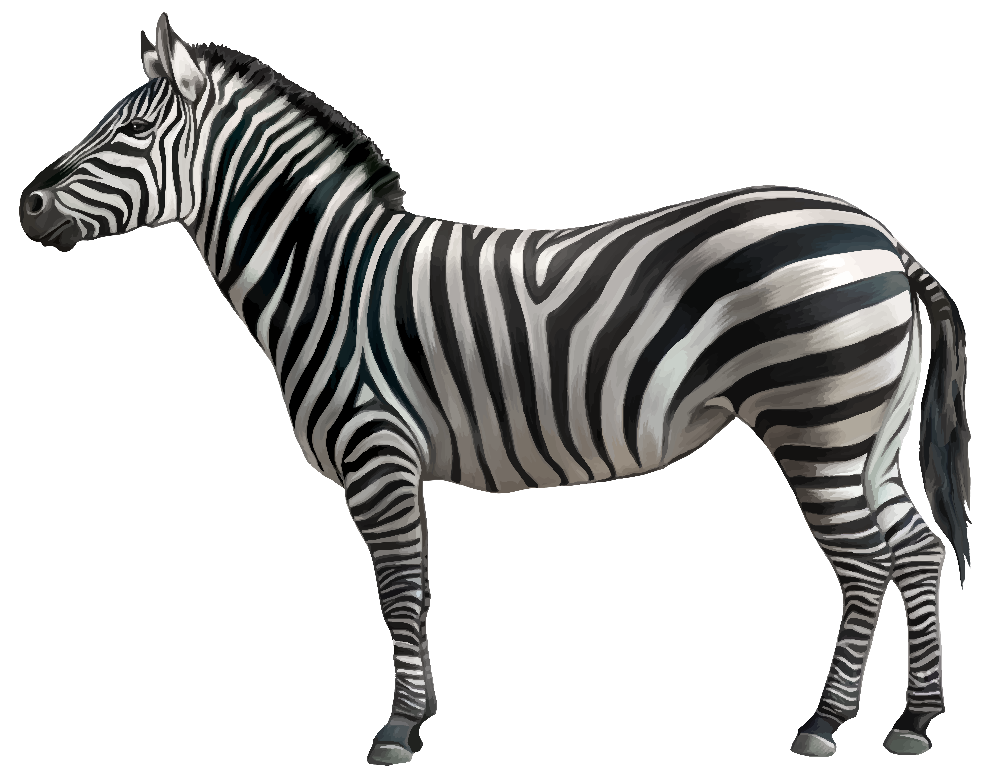

ZEBRA
African equines with distinctive black-and-white striped coats
Zebras' dazzling stripes make them among the most recognisable mammals. They have been featured in art and stories in Africa and beyond. Historically, they have been highly sought after by exotic animal collectors, but unlike horses and donkeys, zebras have never been truly domesticated. The International Union for Conservation of Nature (IUCN) lists the Grévy's zebra as endangered, the mountain zebra as vulnerable and the plains zebra as near-threatened. The quagga, a type of plains zebra, was driven to extinction in the 19th century. Nevertheless, zebras can be found in numerous protected areas.
